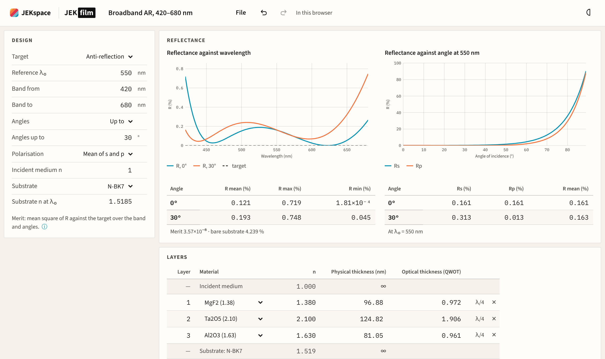
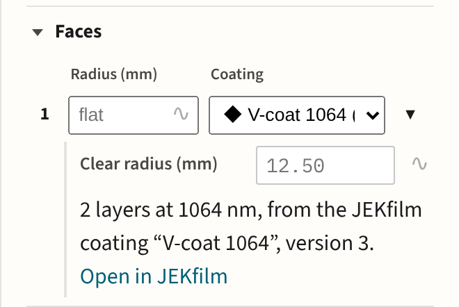
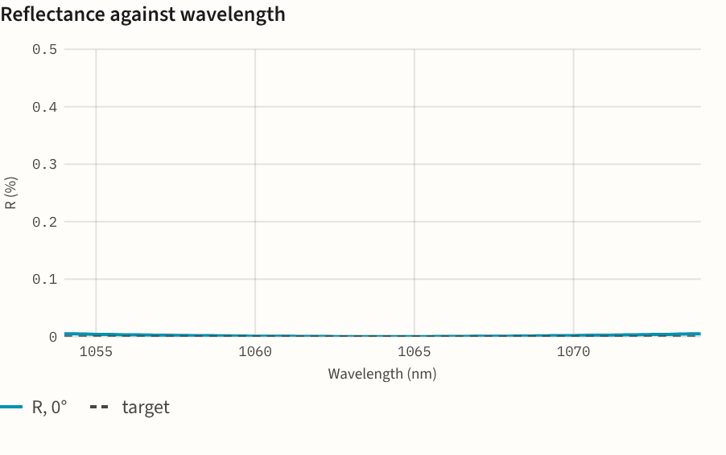
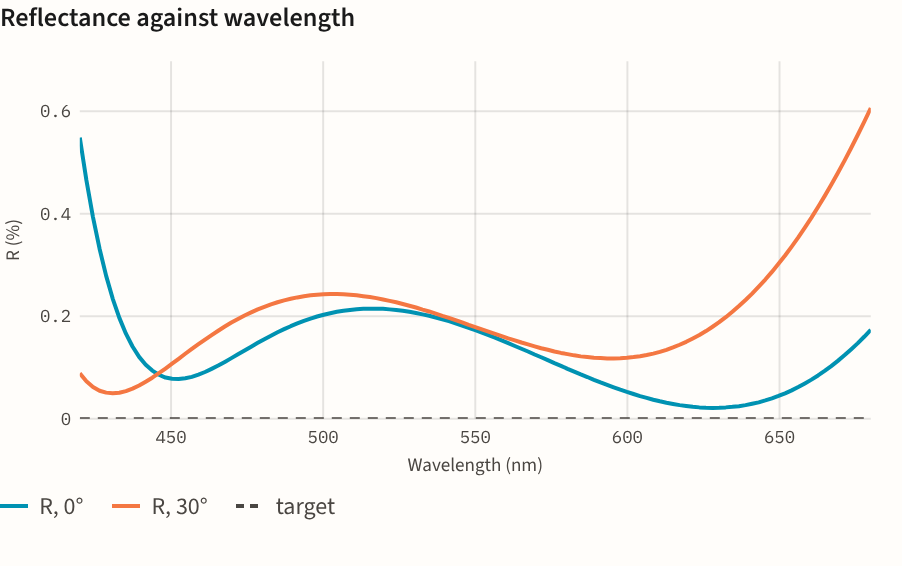
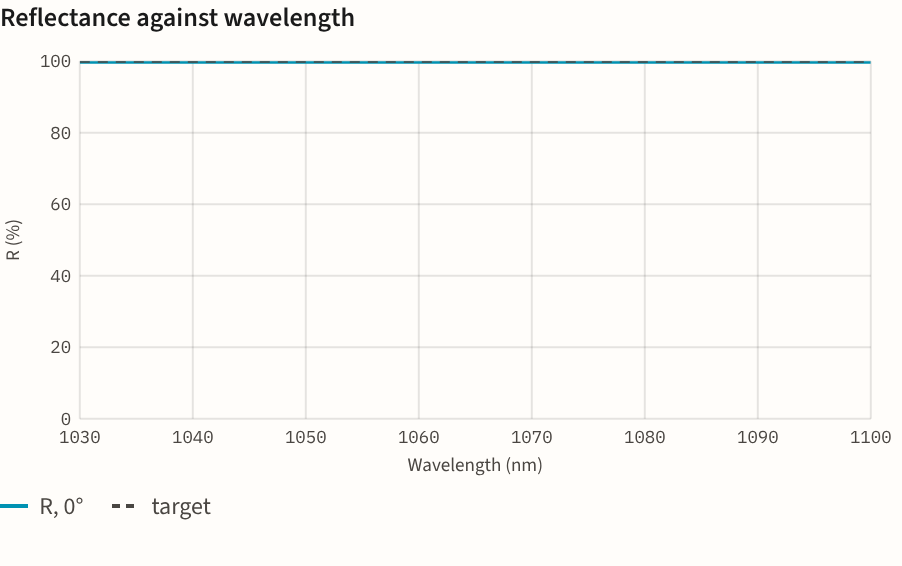
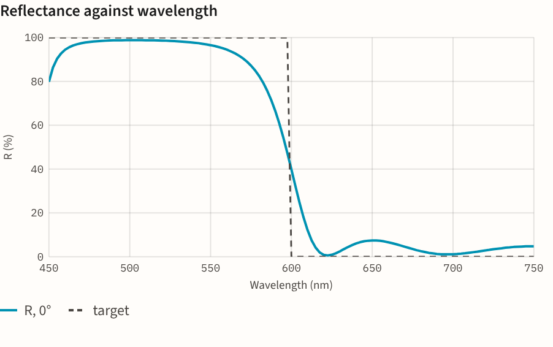
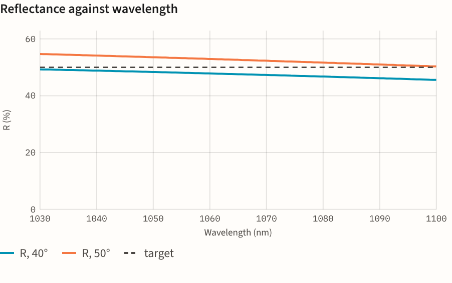
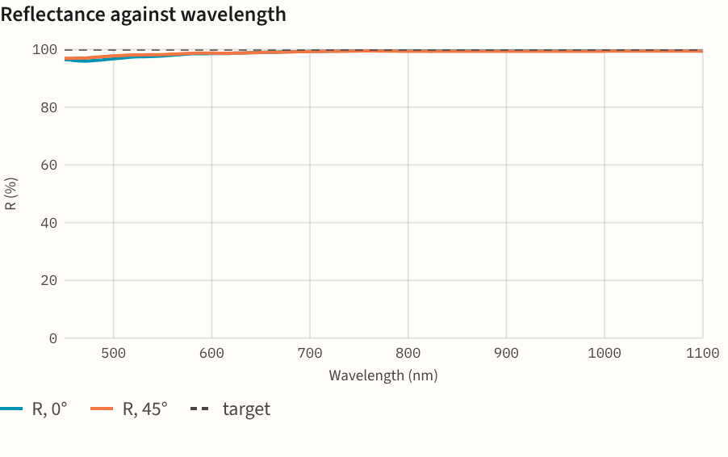

JEKfilm, the coating designer
A thin-film stack on a substrate, judged over a band of wavelengths and a range of angles, with its thicknesses optimised. It uses the thin-film model JEKray traces with, so a coating designed here behaves the same on a JEKray bench.

The design
Choose what the coating is for: anti-reflection, a high reflector, a beam splitter with the reflectance you want, or a dichroic edge. Set the band, the angles (up to a largest, or a band such as 40° to 50°) and the polarisation. The substrate is one of 13 glasses and crystals with their dispersion, ZnSe, silicon and germanium among them for the infrared, or an index of your own.
The layers sit in a table from the incident medium down to the substrate, with each layer’s index, physical thickness and optical thickness in quarter waves. The optimiser searches the thicknesses from where they stand.

On a JEKray bench
Coatings saved to the cloud sit in folders beside your benches on JEKsuite. A JEKray face’s Coating list offers the coatings in its bench’s folder, and a .jekfilm file from your computer. The face keeps a copy of the stack, linked to the coating, and when the coating is saved again the bench offers to update its faces.
From a face, Design a coating in JEKfilm starts on that face’s glass at the bench’s wavelength. Once saved, the coating goes back onto the face.

Checked against
- A quarter-wave MgF2 layer on N-BK7 at 550 nm reflects 1.26% square on, the textbook ((ns − nc²)/(ns + nc²))², to 10−9.
- A half-wave layer leaves the bare Fresnel reflectance, as an absentee layer should.
- The substrates’ indices are JEKray’s own Sellmeier data, the same at every wavelength to 10−12.
- A coating put on a face of the same glass traces on the bench with the reflectance JEKfilm shows, to 10−12.
Examples
Each opens in JEKfilm. The plots show each one’s reflectance across its band.

V-coat, 1064 nm
Two layers on fused silica: 0.002% reflected across 1054–1074 nm.

Broadband AR, 420–680 nm
Five layers on N-BK7 from a needle search: 0.13% mean square on, 0.20% at 30°.

HR mirror, 1064 nm
Twenty-one quarter waves of Ta2O5 and SiO2: 99.9% reflected over 1030–1100 nm.

Long-pass edge, 600 nm
Seventeen layers on N-BK7: blue and green reflected, red passed.

Plate beam splitter, 45°
Three layers on fused silica for s light: 47–53% reflected from 40° to 50°.

Protected silver
Silver under a half-wave of SiO2: 98.9% mean reflected from 450 to 1100 nm, out to 45°.
Plans
JEKfilm shares JEKray’s accounts: one sign-in for every JEK app, and a JEKrayPro subscription covers JEKfilm too.
| What you do | What it needs |
|---|---|
| Design a coating and read its curves and figures; open a .jekfilm file | Nothing |
| Export the curves as CSV | A free account |
| Optimise the thicknesses; save coatings as .jekfilm files or in the cloud, with their history | JEKrayPro |